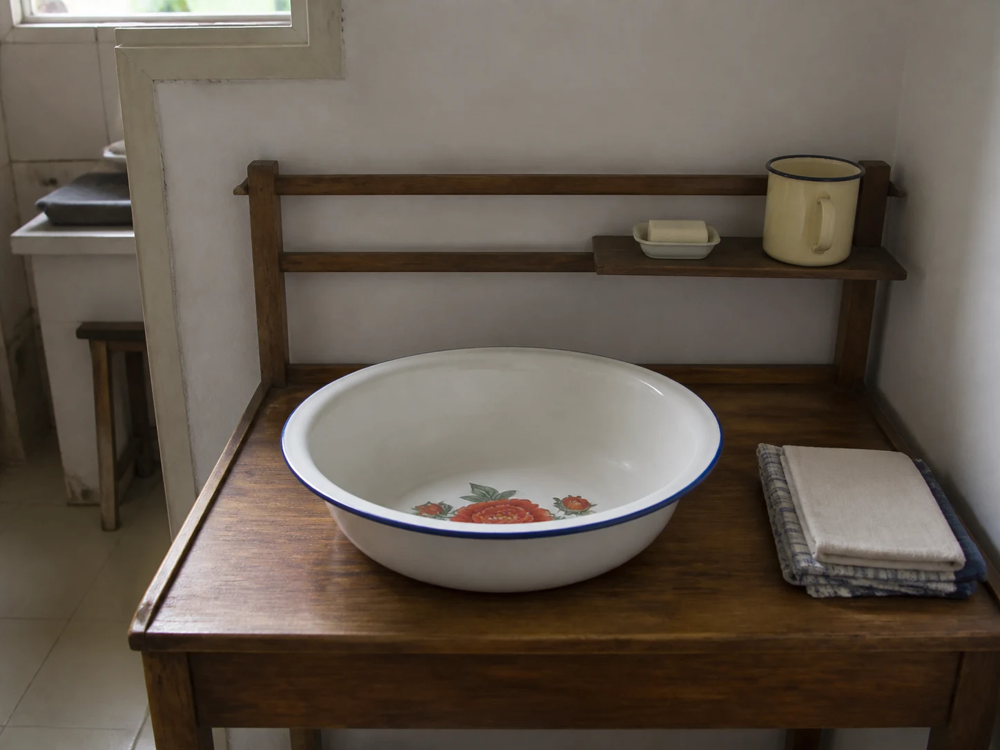

The Enamel Washbasin Returned to Its Place
A wide enamel washbasin with red peonies waited on its wooden stand, empty except for the window light caught along its blue rim in the quiet room.

Flowers beneath the waterline
The enamel basin was wide enough to require both hands. A blue line circled the rim, and red peonies opened across the white interior. When water entered, the flowers seemed to move beneath the surface. When the basin dried, they returned to the bottom of the bowl, clear again beneath the narrow window as the room dried around it.
Basins like this appear throughout the Folk Calm archive but rarely as the main subject. One waits beneath a foot-soak stool. Another receives water carried from the kitchen. Soap pods, folded cloth, a green glass bottle, and a towel all gather around the same round shape.
Water carried between rooms
Before private tiled bathrooms became common, enamel washbasins could travel between a washstand, balcony, bedroom, and courtyard. This did not mean that every household used one vessel for every purpose. Basins could be separated by person or task. What remained familiar was the sequence around them: fill, lift, set down, use, empty, rinse.
In Rice Water Between Kitchen and Washroom, an enamel bowl carries cloudy water out of the kitchen. In Soap Pods at the Wash Basin, the container belongs to washing and cleanup. The contents change, but the careful carrying does not, and a full basin makes the arms visible.
The basin returned to its place
After the water was poured away, the rim needed one more pass with a cloth. The basin was tilted until the last line ran toward the drain. A round damp mark remained on the tile and was wiped before the stool went back against the wall.
Empty again, the basin returned to its wooden stand beside the soap dish and folded towel. Its usefulness did not end with a dramatic result. It ended with the room restored: cloth hung open, water gone, flowers visible, and the blue rim catching the same strip of light.